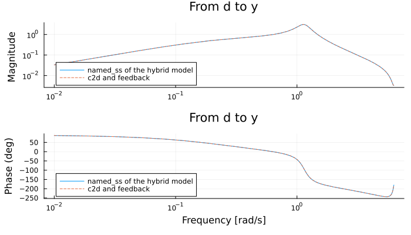
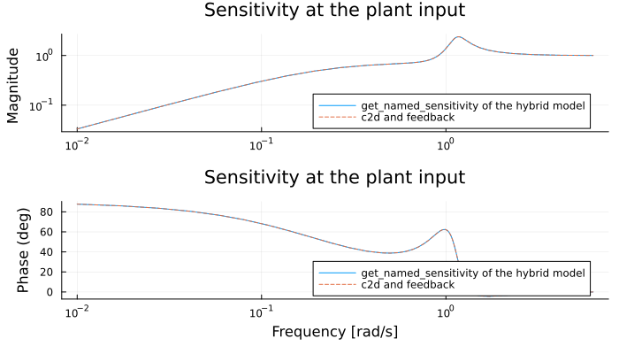
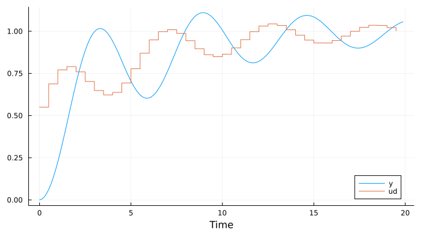
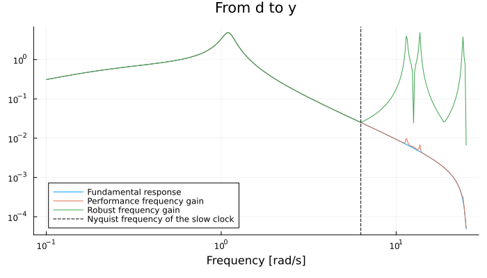
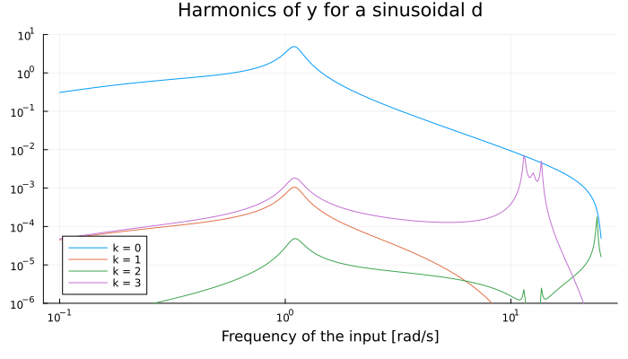
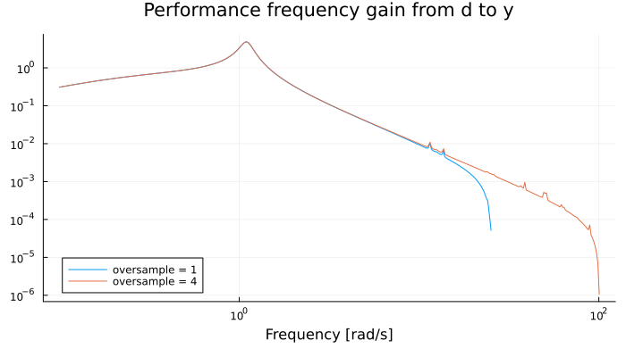
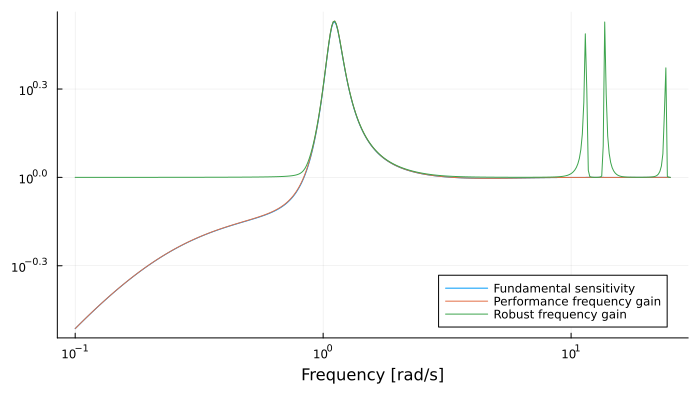
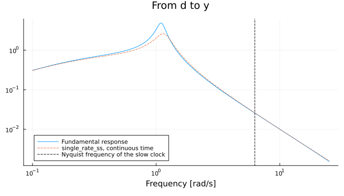

Hybrid and multi-rate models
A hybrid model contains clocked (discrete-time) partitions, such as digital controllers, that are connected to continuous-time equations through the operators Sample and Hold. This page describes how such models are linearized and analyzed:
- With a single clock, the model sampled at the clock is time invariant, and
named_ssand theget_named_*functions return a discrete-time system. - With several clocks, the model is in general periodically time varying. It then has no transfer function between its signals, and the functions on this page provide the representations and the frequency-domain quantities that replace it.
The linearization of each clock partition is performed by ModelingToolkit.linearize_hybrid. Throughout, the model is linearized in a stationary operating point: an equilibrium of the continuous-time equations at which the state variables of the clocked partitions do not change at the ticks. Each partition is represented by one set of Jacobians, evaluated at the operating point and the time of the linearization; a model that depends explicitly on time is not represented. All statements on this page concern this linearization.
A model with one clock
The model below consists of a continuous-time plant and a clocked PI controller. The controller output is held and connected to the plant through the analysis point plant_input.
using ControlSystemsMTK, ControlSystemsBase, ModelingToolkit, RobustAndOptimalControl, LinearAlgebra, Plots
using ModelingToolkit: t_nounits as t, D_nounits as D, connect
default(size = (700, 400))
Tfast = 0.125 # Period of the fast clock
ratio = 4
Tslow = ratio * Tfast # Period of the slow clock
kslow = ShiftIndex(Clock(Tslow))
kfast = ShiftIndex(Clock(Tfast))
@variables x1(t) x2(t) y(t) d(t) r(t) e(t) xi(t) ud(t) yf(t)
@variables uh(t) [output = true] u(t) [input = true]
@parameters kp = 0.4 ki = 0.3
plant = [
D(x1) ~ x2
D(x2) ~ -x1 - 0.6x2 + u + d
y ~ x1
]
# A PI controller on the slow clock, `measurement` is a signal on that clock
controller(measurement) = [
e ~ r - measurement
xi(kslow) ~ xi(kslow - 1) + ki * Tslow * e(kslow)
ud ~ kp * e + xi
]
hold = [uh ~ Hold(ud); connect(uh, :plant_input, u)]
@named single = System([plant; controller(Sample(Tslow)(y)); hold; r ~ 0], t)
op = Dict(x1 => 0.0, x2 => 0.0, d => 0.0, xi => 0.0, r => 0.0, yf => 0.0)
G = named_ss(single, [d], [y]; op, hybrid = true)single: NamedStateSpace{Discrete{Float64}, Float64}
A =
0.640378248291481 -0.6420425652415986 0.41422100983328936
0.41422100983328947 0.8278118239967549 0.11108914580854534
0.0 -0.15 1.0
B =
0.41422100983328936
0.11108914580854534
0.0
C =
0.0 1.0 0.0
D =
0.0
Sample Time: 0.5 (seconds)
Discrete-time state-space model
With state names: x2(t) x1(t) xiₜ₋₁(t)
input names: d(t)
output names: y(t)
The result is the system from the disturbance d to the output y with the loop closed: the continuous-time partition is discretized with zero-order hold at the period of the clock and connected to the linearization of the controller. The disturbance is consequently assumed to be constant between the ticks of the clock, and the output is obtained at the ticks only. A model in which a sampled signal depends directly on a held signal is not accepted by this assembly; multirate_linearization below represents it. The keyword argument hybrid = true selects this linearization. It is the default when a discrete compilation pass such as SynchToolkit.compile_lustre is supplied in additional_passes, which is how hybrid models are compiled for simulation.
The same system is obtained by performing these steps explicitly: the plant and the controller are linearized individually, the plant is discretized with c2d, and the loop is closed with feedback.
# The continuous-time plant, from its input to its output
@named plant_model = System([plant; d ~ 0], t)
P = named_ss(plant_model, [u], [y]; op = Dict(x1 => 0.0, x2 => 0.0, u => 0.0))
# The clocked controller, from the measurement to the controller output
@variables ym(t)
@named controller_model = System([controller(ym); r ~ 0], t)
C = named_ss(controller_model, [ym], [ud]; op = Dict(xi => 0.0, ym => 0.0), hybrid = true)
Pd = c2d(P.sys, Tslow) # Zero-order hold at the period of the clock
# The disturbance enters at the plant input, and the controller contains the sign of the feedback
G_explicit = feedback(Pd, -C.sys)
bodeplot(G.sys, label = "named_ss of the hybrid model", title = "From d to y", legend = :bottomleft)
bodeplot!(G_explicit, label = "c2d and feedback", linestyle = :dash)
The sensitivity functions are obtained in the same way, here for a model in which the disturbance is absent. The sensitivity function at the plant input is feedback(1, -C*Pd) in terms of the individually linearized systems:
@named single_closed = System([plant; controller(Sample(Tslow)(y)); hold; r ~ 0; d ~ 0], t)
S = get_named_sensitivity(single_closed, single_closed.plant_input; op, hybrid = true)
S_explicit = feedback(1, -C.sys * Pd)
bodeplot(S.sys, label = "get_named_sensitivity of the hybrid model", title = "Sensitivity at the plant input", legend = :bottomright)
bodeplot!(S_explicit, label = "c2d and feedback", linestyle = :dash)
A model with two clocks
The measurement is now filtered by a filter on a fast clock, and the controller on the slow clock reads the output of the filter through Sample(Hold(yf)). At a tick of the slow clock, which coincides with a tick of the fast clock, the controller thereby obtains the output that the filter held before the tick, that is, the output of the previous tick of the fast clock.
fastfilter = [yf(kfast) ~ 0.5 * yf(kfast - 1) + 0.5 * Sample(Tfast)(y)]
slow(signal) = Sample(Tslow)(Hold(signal))
@named multi = System([plant; fastfilter; controller(slow(yf)); hold], t)named_ss rejects every model with several clocks, since in general no time-invariant system with the signals of the model as inputs and outputs represents it:
try
named_ss(multi, [d, r], [y]; op, hybrid = true)
catch err
println(err.msg)
endThe assembly of a hybrid linearization into a single time-invariant system requires all clocked partitions to be on the same periodic clock, but the model has the clocks SciMLBase.PeriodicClock(0.125, 0.0), SciMLBase.PeriodicClock(0.5, 0.0). `multirate_linearization` creates a periodic model of a model with several clocks, and `single_rate_ss` a time-invariant approximation.Why the model is periodic
The slow partition is updated at every fourth tick of the fast clock. The response of the linearized model to an input therefore depends on the time at which the input is applied in relation to the ticks of the slow clock. Clocks with fixed commensurate periods give a schedule of ticks that repeats with the common period Tc, so a shift of the input by Tc shifts the response by Tc. A model with this property is periodically time varying with period Tc.
The consequence in the frequency domain is that, for a stable model, a sinusoidal input with angular frequency $\omega$ gives a steady-state output that can contain the frequencies
\[\omega + k\,\dfrac{2\pi}{T_c}, \qquad k = 0, \pm 1, \pm 2, \ldots\]
The component with $k = 0$ is the fundamental component, the others are harmonics created by sampling and holding (aliasing). A time-invariant system produces the fundamental component only. An output that is observed at $n_y$ uniformly spaced instants per period distinguishes $n_y$ classes of these components, $k = 0, \ldots, n_y - 1$: the components $k$ and $k + n_y$ differ by a constant factor at the instants of observation, and each reported harmonic contains all components of its class.
The periodic model and the lifted system
multirate_linearization creates a linear periodic model on the event grid, the sorted set of instants within one period at which a clock ticks, an input of the continuous-time partition is updated, or an output of the continuous-time partition is observed. The period is the least common multiple of the clock periods, which are required to be commensurate.
ml = multirate_linearization(multi, [d, r], [y, ud]; op)MultirateLinearization with common period 0.5, 4 events and state dimension 7
Inputs:
d(t): 4 instants per period
r(t): 1 instant per period
Outputs:
y(t): 4 instants per period
ud(t): 1 instant per period
The model is a sequence of maps, one per event $k$,
\[\begin{aligned} x_{k+1} &= A_k x_k + B_k u \\ y_k &= C_k x_k + D_k u \end{aligned}\]
where $u$ contains the values of all inputs during the whole period, $y_k$ contains the outputs that are observed at event $k$, and the state $x$ contains the state of the continuous-time partition, the state variables of the clocked partitions and the held values of the signals that cross clock boundaries.
Each signal has a set of instants within the period: the ticks of its clock for a signal of a clocked partition, and a uniform grid for a signal of the continuous-time partition. An input is held between its instants, an output is observed at them. The operations at an event are, in this order:
- Inputs of the continuous-time partition that are specified by the user take their new values, if the event is an instant of their grid.
- The signals of the continuous-time partition that are sampled are evaluated with the values that the clocked partitions held before the event. A sampled signal that depends directly on a held signal thus contains the previously held value.
- The clocked partitions that tick compute their outputs from their state variables before the event, and then update their state variables. A clocked signal that is read through
Sample(Hold(x))has the value that was held before the event: ifxis computed at the same instant, the reader obtains the previous value ofx. A clocked signal that is read through another operator, such asLatestof SynchToolkit, has the value that is computed at the same instant. Outputs that depend directly on each other in a cycle through such operators are rejected, also if the cycle could be solved algebraically. - The held values are updated, and the outputs of the continuous-time partition that are specified by the user are observed, if the event is an instant of their grid.
- The continuous-time partition is integrated exactly to the next event with constant inputs.
The distinction between items 2 and 4 matters only for signals of the continuous-time partition that depend directly on a held signal.
Lifting collects the values of every signal over one period into a vector. The periodic model then becomes the time-invariant system
\[\begin{aligned} x(m+1) &= F x(m) + G \bar u(m) \\ \bar y(m) &= H x(m) + E \bar u(m) \end{aligned}\]
with sample interval Tc, where $\bar u(m)$ and $\bar y(m)$ contain all values of the signals in period $m$, and
\[F = A_K \cdots A_2 A_1\]
is the monodromy matrix.
Gl = lifted_ss(ml)
Gl.u, Gl.y([Symbol("d(t)@1"), Symbol("d(t)@2"), Symbol("d(t)@3"), Symbol("d(t)@4"), Symbol("r(t)")], [Symbol("y(t)@1"), Symbol("y(t)@2"), Symbol("y(t)@3"), Symbol("y(t)@4"), Symbol("ud(t)")])The disturbance d and the output y belong to the continuous-time partition and have one channel per tick of the fast clock, the reference r and the controller output ud have one channel per period. The lifted system is an ordinary discrete-time system and can be simulated, for example for a step in the reference:
nperiods = 40
ubar = zeros(Gl.nu, nperiods)
ubar[end, :] .= 1 # The reference is the last channel
res = lsim(Gl.sys, ubar)
tfast = Tfast .* (0:ratio*nperiods-1)
plot(tfast, vec(res.y[1:ratio, :]), label = "y", xlabel = "Time")
plot!(Tslow .* (0:nperiods-1), res.y[end, :], label = "ud", linetype = :steppost)
Stability
The eigenvalues of the monodromy matrix are the characteristic multipliers of the periodic model. The linearization is exponentially stable if and only if all multipliers have a magnitude smaller than one. For a given interconnection, the nonzero multipliers do not depend on the choice of inputs, outputs and grids; the number of multipliers that are zero does, since the model contains one hold variable per input of the continuous-time partition.
λ = multipliers(ml)
maximum(abs, λ)0.9575443450408748isstable performs this test:
isstable(ml)trueHold variables that are redundant contribute multipliers that are zero.
Frequency-domain functions
For an input port $u$ with instants $t_{u,1}, \ldots, t_{u,n_u}$ and an output port $y$ with instants $t_{y,1}, \ldots, t_{y,n_y}$, let $G_L$ be the corresponding block of the transfer matrix of the lifted system and
\[a_s(\omega) = \begin{bmatrix} e^{i\omega t_{s,1}} & \cdots & e^{i\omega t_{s,n_s}} \end{bmatrix}^{\mathsf T}\]
the values of the sinusoid $e^{i\omega t}$ at the instants of a port $s$. The following functions of $\omega$ are available.
| Function | Definition | Interpretation |
|---|---|---|
fundamental_response | $a_y(\omega)^* G_L(e^{i\omega T_c})\, a_u(\omega) / n_y$ | Complex amplitude of the fundamental component of the output |
harmonic_response | $a_y(\omega + 2\pi k/T_c)^* G_L(e^{i\omega T_c})\, a_u(\omega) / n_y$ | Complex amplitude of harmonic $k$ |
performance_frequency_gain | $\lVert G_L(e^{i\omega T_c})\, a_u(\omega)\rVert_2 / \sqrt{n_y}$ | Root-mean-square gain for one sinusoid, all harmonics included |
robust_frequency_gain | $\bar\sigma\big(G_L(e^{i\omega T_c})\big)$ | Largest gain, in terms of the energy of the sequences of values, over inputs that contain several of the frequencies $\omega + 2\pi k/T_c$ |
The first three functions require the instants of each port to be uniformly spaced. The functions satisfy
\[|\text{fundamental response}| \le \text{performance frequency gain} \le \sqrt{n_u/n_y}\;\text{robust frequency gain}\]
and the squared performance frequency gain is the sum of the squared magnitudes of the harmonics $k = 0, \ldots, n_y - 1$. For a discrete-time time-invariant system between two signals on the same grid, the fundamental response is the frequency response and the performance frequency gain is its magnitude. The robust frequency gain is periodic in $\omega$ with period $2\pi/T_c$ also for such a system, for which it is the largest magnitude of the frequency response among the frequencies $\omega + 2\pi k/T_c$. A continuous-time time-invariant plant between a held input and a sampled output is in general not of this kind.
w = exp10.(range(-1, log10(π / Tfast), length = 400))
plot(w, abs.(fundamental_response(ml, "d(t)", "y(t)", w)), label = "Fundamental response",
xscale = :log10, yscale = :log10, xlabel = "Frequency [rad/s]", title = "From d to y", legend = :bottomleft)
plot!(w, performance_frequency_gain(ml, "d(t)", "y(t)", w), label = "Performance frequency gain")
plot!(w, robust_frequency_gain(ml, "d(t)", "y(t)", w), label = "Robust frequency gain")
vline!([π / Tslow], label = "Nyquist frequency of the slow clock", linestyle = :dash, color = :black)
The fundamental response and the performance frequency gain agree at frequencies where the harmonics are small. The part of the power of the sampled output that appears at other frequencies than that of the input is $1 - |H_0|^2/\mathrm{PFG}^2$, where $H_0$ is the fundamental response and PFG the performance frequency gain, among the classes of components that the output distinguishes. For an output with one instant per period this part is zero irrespective of the behavior between the instants. The harmonics themselves show to which frequencies the input is converted:
plot(xscale = :log10, yscale = :log10, xlabel = "Frequency of the input [rad/s]", title = "Harmonics of y for a sinusoidal d", legend = :bottomleft, ylims = (1e-6, 10))
for k in 0:ratio-1
plot!(w, abs.(harmonic_response(ml, "d(t)", "y(t)", w, k)), label = "k = $k")
end
current()
The following properties determine how the functions may be used.
- The fundamental response is not a transfer function: it is not the ratio between the transforms of the output and the input. Neither stability nor stability margins can be concluded from it.
- The functions describe an input that is held on its grid and an output that is observed on its grid. Goodwin and Salgado (1994) define fundamental sensitivity functions for continuous-time sinusoids and continuous-time outputs, which the fundamental response of a sensitivity function approaches as the grid of the continuous-time signals is refined, see the next section. For a loop with one clock, robust stability for multiplicative plant perturbations with the weight $W_1$ requires $\lVert T^0 W_1\rVert_\infty \le 1$, and for divisive perturbations with the weight $W_2$ it requires $\lVert S^0 W_2\rVert_\infty \le 1$, where $S^0$ and $T^0$ are the fundamental sensitivity and complementary sensitivity functions (Seron, Braslavsky and Goodwin, 1997). These conditions are necessary and not sufficient: a small peak is not a proof of robustness.
- For a stable model, the supremum over frequency of the robust frequency gain is the H∞ norm of the lifted system between the selected signals, that is, the induced $\ell_2$ norm from the sequence of values of the input to the sequence of values of the output. It equals
hinfnormof the corresponding channels oflifted_ss, and for a model with one clock and signals on that clock it is the H∞ norm of the discrete-time transfer function, for example the peak of the sensitivity function. It is not the induced norm between continuous-time signals, which the refinement of the grid in the next section approximates.
Behavior between the ticks
Inputs and outputs of the continuous-time partition are represented on a uniform grid, the interval of which is the smallest clock period divided by the keyword argument oversample. A larger value refines both the hold of the inputs and the observation of the outputs without changing the ticks of the clocks. The frequency functions between such signals then extend to higher frequencies and include the response between the ticks, whereas signals of clocked partitions keep their rates. continuous_rate = :period instead selects the common period as interval, which gives one channel per signal of the continuous-time partition, whereas signals of clocked partitions keep their instants; oversample is then not used.
ml4 = multirate_linearization(multi, [d, r], [y, ud]; op, oversample = 4)
w4 = exp10.(range(-1, log10(4π / Tfast), length = 400))
plot(w, performance_frequency_gain(ml, "d(t)", "y(t)", w), label = "oversample = 1",
xscale = :log10, yscale = :log10, xlabel = "Frequency [rad/s]", title = "Performance frequency gain from d to y", legend = :bottomleft)
plot!(w4, performance_frequency_gain(ml4, "d(t)", "y(t)", w4), label = "oversample = 4")
The stability of the model, and its nonzero multipliers, do not depend on the grid:
maximum(abs, multipliers(ml4)) ≈ maximum(abs, multipliers(ml))trueRefinement of the grid approximates the gains between continuous-time signals (Yamamoto, Madievski and Anderson, 1999), provided that these are bounded: an ideal sampler that observes a signal with direct feedthrough from an arbitrary input does not define a bounded operator. The implementation supplies no bound on the error for a finite oversample.
Sensitivity functions
get_sensitivity, get_comp_sensitivity and get_looptransfer return a HybridLinearization with the keyword argument hybrid = true, from which the periodic model is created. The sensitivity function is formed for the complete interconnection before any frequency function is evaluated: the fundamental response of the sensitivity function is in general not $1/(1 + L^0)$, where $L^0$ is the fundamental response of the loop-transfer function. The sensitivity function at the plant input is
@named multi_closed = System([plant; fastfilter; controller(slow(yf)); hold; r ~ 0; d ~ 0], t)
hl = get_sensitivity(multi_closed, multi_closed.plant_input; op, hybrid = true)
mlS = multirate_linearization(hl)
plot(w, abs.(fundamental_response(mlS, 1, 1, w)), label = "Fundamental sensitivity",
xscale = :log10, yscale = :log10, xlabel = "Frequency [rad/s]", legend = :bottomright)
plot!(w, performance_frequency_gain(mlS, 1, 1, w), label = "Performance frequency gain")
plot!(w, robust_frequency_gain(mlS, 1, 1, w), label = "Robust frequency gain")
Stability margins
In a time-invariant loop, a gain or phase margin states how much one perturbation of the loop gain is tolerated. In a periodic loop, the signal at the break point has $n$ instants per period, and perturbations differ in how they act on these $n$ values. multirate_margins returns one margin per class of perturbations:
| Field | Perturbation | Property |
|---|---|---|
gain_interval | A constant real positive gain | Numerical estimate of the interval of gains, containing the gain one, for which the loop is stable and well posed |
disk_margin_lti_lower_bound | A time-invariant dynamic system at the rate of the signal | A lower bound of the disk margin on a frequency grid |
disk_margin_dynamic | An arbitrary dynamic system that acts on the lifted signal | Disk margin for this class, conservative for time-invariant perturbations |
The margins are computed from the sensitivity function $S$ at the break point, which is required to be stable and to have one signal with uniformly spaced instants as input and output. With $R$ denoting the loop-transfer function that get_looptransfer returns, which includes the sign of the feedback, $S = (1 - R)^{-1}$, and the loop-transfer function in the convention of negative feedback is $L = -R$.
Gain interval. The gains at which the loop is not well posed are computed from the feedthrough matrix of the lifted sensitivity function. The loss of stability is located by a search outward from the gain one in steps of 0.2 % within the range $(10^{-4}, 10^4)$, followed by bisection. The search can miss an interval of unstable gains that is narrower than the step. A limit of 0 or Inf states that no boundary was found within the range.
Time-invariant perturbations. A time-invariant perturbation $\Delta$ at the rate of the signal acts on the frequencies $\omega + 2\pi k/T_c$, $k = 0, \ldots, n-1$, with the values $\Delta(e^{i(\omega + 2\pi k/T_c)T_c/n})$. For a complex perturbation without further restrictions these values are independent of each other. In the basis of these frequencies the perturbation is diagonal, and the margin follows from the structured singular value with $n$ independent complex scalars, for which an upper bound is computed on a grid of N frequencies. The result is therefore a lower bound of the margin on that grid, and a peak between the frequencies of the grid is not detected. A perturbation with real coefficients, with a fixed order, or in the form of a delay belongs to a smaller class and can have a larger margin. The structure of the perturbation follows Dullerud and Glover (1993), who treat perturbations of a continuous-time plant.
Dynamic perturbations of the lifted signal. This class contains the periodically time-varying perturbations, and also systems that are not causal within a period, in which a value late in the period influences an earlier one. The radius of the disk is $1/\lVert S_L + (\sigma - 1)I/2\rVert_\infty$, where $S_L$ is the lifted sensitivity function and $\sigma$ the skew.
The disk margins are RobustAndOptimalControl.Diskmargin objects, see the documentation of disk margins. They are comparable with each other at the same skew, and not with the gain interval, which concerns a different kind of perturbation.
The example below places an analysis point at the output of the filter, a signal on the fast clock with four instants per period.
@variables fo(t) [output = true] fi(t) [input = true] yf2(t)
@named multi_break = System([plant; fastfilter; fo ~ yf; connect(fo, :filter_output, fi);
yf2(kfast) ~ fi(kfast); controller(slow(yf2)); hold; r ~ 0; d ~ 0], t)
opb = merge(op, Dict(yf2 => 0.0))
m = multirate_margins(multi_break, multi_break.filter_output; op = opb)
m.gain_interval(0.0, 1.565093761703816)m.disk_margin_lti_lower_boundDisk margin with:
Margin: 0.3397640293112371
Frequency: 11.466813185602746 rad/s, 1.8250000000000002 Hz
Gain margins: [0.7095741065724013, 1.4092960703294282]
Phase margin: 19.282950008166935
Skew: 0
Worst-case perturbation: missing
m.disk_margin_dynamicDisk margin with:
Margin: 0.18722484605213646
Frequency: 1.0957134907267037 rad/s, 0.1743882182616305 Hz
Gain margins: [0.8288014637451924, 1.206561575653106]
Phase margin: 10.696022079832021
Skew: 0
Worst-case perturbation: missing
The disk margin for the larger class of perturbations is not larger than the margin for the smaller class; the computed lower bound for time-invariant perturbations is compared with it in the example above. If the break point has one instant per period, the loop seen from the break point is time invariant, and the radius of both disk margins agrees with RobustAndOptimalControl.diskmargin(L, σ) for the loop-transfer function $L = -R$.
All margins apply to the signal as it is represented in the periodic model. For an analysis point in the continuous-time partition, the perturbation acts between the observation of the signal on its grid and a hold on that grid. The margins then apply to the continuous-time signal itself only if moving the perturbation to the grid changes no value that is sampled from the signal, including a value that is read at an instant that coincides with an instant of the grid: a sampler reads the previously held value of a clocked signal, but the new value of a perturbation that enters on the grid. A physical gain can alternatively be analyzed at a break point in the clocked partition that drives the hold. Margins for dynamic perturbations of a continuous-time signal, such as a delay margin, are not provided.
A time-invariant approximation
single_rate_ss converts all partitions to one common rate and connects them, which gives an ordinary state-space system at the cost of an approximation: aliasing between the rates and the phases of the clocks are not represented. This is the approach of block-wise rate conversion that is common in simulation tools. The conversion method is the Tustin approximation by default. With Ts = 0 the result is a continuous-time system in which the clocked partitions are converted to continuous time; with Ts > 0 the continuous-time partition is discretized, and clocked partitions with another sample interval are converted through continuous time.
Gc = single_rate_ss(multi, [d, r], [y, ud]; Ts = 0, op)
approx = abs.(vec(freqresp(Gc.sys[1, 1], w)))
plot(w, abs.(fundamental_response(ml4, "d(t)", "y(t)", w)), label = "Fundamental response",
xscale = :log10, yscale = :log10, xlabel = "Frequency [rad/s]", title = "From d to y", legend = :bottomleft)
plot!(w, approx, label = "single_rate_ss, continuous time", linestyle = :dash)
vline!([π / Tslow], label = "Nyquist frequency of the slow clock", linestyle = :dash, color = :black)
In this example, the magnitude of the approximation agrees with the fundamental response at low frequencies and is smaller at the resonance of the closed loop. The conversion of each partition omits the effects of the holds and of the transitions between rates, and the accuracy depends on the signals and on the frequency. No stability or robustness property of the model follows from it; in particular, the poles of the approximation are not the multipliers of the model. It is the only representation on this page that is available when the clock periods are not commensurate.
Choice of representation
| Task | Function | Validity |
|---|---|---|
| Stability | multipliers, isstable | Exact for the linearization |
| Simulation and norms with tools for time-invariant systems | lifted_ss | Exact at the instants of the signals |
| Loop shaping, location of a peak in frequency | fundamental_response, harmonic_response | Exact amplitude of each component; no certificate of stability or robustness |
| Detection of aliasing | performance_frequency_gain in relation to the fundamental response | Among the components that the output distinguishes |
| Largest gain (H∞ norm) | robust_frequency_gain | For a stable model, its supremum over frequency is the H∞ norm of the lifted system between the selected signals, that is, the induced $\ell_2$ norm between their sequences of values |
| Margins | multirate_margins | Per class of perturbations, see above |
| A rational model at one rate | single_rate_ss | Approximation |
Limitations
- The linearization is required to be performed in a stationary operating point of the whole model: an equilibrium of the continuous-time partition at which the state variables of the clocked partitions are constant. This is not verified. A model that settles on a periodic orbit rather than an equilibrium is not supported.
- Each partition is represented by one set of Jacobians. A model whose equations depend explicitly on time has Jacobians that vary over the period also in a stationary operating point, and is not represented.
- The clocks are required to be periodic with commensurate periods. The ratios between the periods are approximated by rational numbers within the tolerance
tol, and ratios with a numerator or denominator above 10000 are rejected. Events, state machines and clocks without a fixed period are not accounted for. - The lifted system has one channel per instant of each signal. A common period that is large in relation to the fastest clock gives a large number of channels.
- Ticks of different clocks that are closer than
tol*Tcare treated as simultaneous. In a simulation, tick times that are computed in floating-point arithmetic can separate ticks that coincide mathematically (as for the periods 0.1 and 0.3), and the partitions are then evaluated in the order of their tick times. - Outputs of clocked partitions that tick at the same instant and depend directly on each other in a cycle, through operators that read the value computed at that instant, are rejected, also if the cycle could be solved algebraically.
- A connection between two clocked partitions can be expressed as
Sample(Hold(x))or with the operatorLatestof SynchToolkit. These are not equivalent: at an instant where both clocks tick,Sample(Hold(x))gives the value ofxfrom its previous tick andLatestthe value computed at that instant, see item 3 of the operations at an event. The treatment ofLatestwas compared with simulations of models compiled with SynchToolkit, for clock ratios of two, three and four. SynchToolkit does not acceptSample(Hold(x))between clocked partitions, so its treatment follows the definition of the operators and was not compared with a simulation. A signal that is read throughSample(Hold(x))within its own clock partition is delayed by one tick;named_ssrejects such a model. - If the inputs are specified through analysis points, they are required to belong to one clock partition, and correspondingly for the outputs, since their order cannot be recovered otherwise.
- A lifted system used for synthesis requires a controller that respects the chronological order of the channels within the period, which standard synthesis methods do not enforce.
References
- G. C. Goodwin and M. Salgado, "Frequency domain sensitivity functions for continuous time systems under sampled data control", Automatica 30(8), 1994.
- M. M. Seron, J. H. Braslavsky and G. C. Goodwin, Fundamental Limitations in Filtering and Control, Springer, 1997, chapter 6.
- R. A. Meyer and C. S. Burrus, "A unified analysis of multirate and periodically time-varying digital filters", IEEE Transactions on Circuits and Systems 22(3), 1975.
- M. Araki and K. Yamamoto, "Multivariable multirate sampled-data systems: state-space description, transfer characteristics, and Nyquist criterion", IEEE Transactions on Automatic Control 31(2), 1986.
- O. Lindgärde and B. Lennartson, "Performance and robust frequency response for multirate sampled-data systems", American Control Conference, 1997.
- M. van Haren, L. Blanken and T. Oomen, "Performance analysis of multirate systems: a direct frequency-domain identification approach", Mechanical Systems and Signal Processing 235, 2025.
- G. Dullerud and K. Glover, "Robust stabilization of sampled-data systems to structured LTI perturbations", IEEE Transactions on Automatic Control 38(10), 1993.
- P. M. Thompson, "Gain and phase margins of multi-rate sampled-data feedback systems", International Journal of Control 44(3), 1986.
- Y. Yamamoto, A. G. Madievski and B. D. O. Anderson, "Approximation of frequency response for sampled-data control systems", Automatica 35(4), 1999.
- P. Seiler, A. Packard and P. Gahinet, "An introduction to disk margins", IEEE Control Systems Magazine 40(5), 2020.